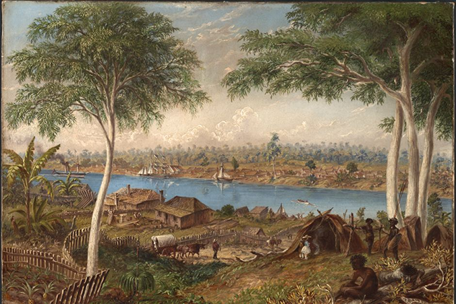
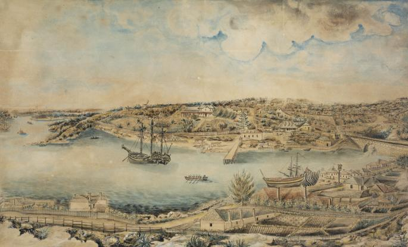
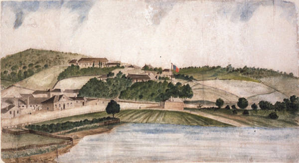
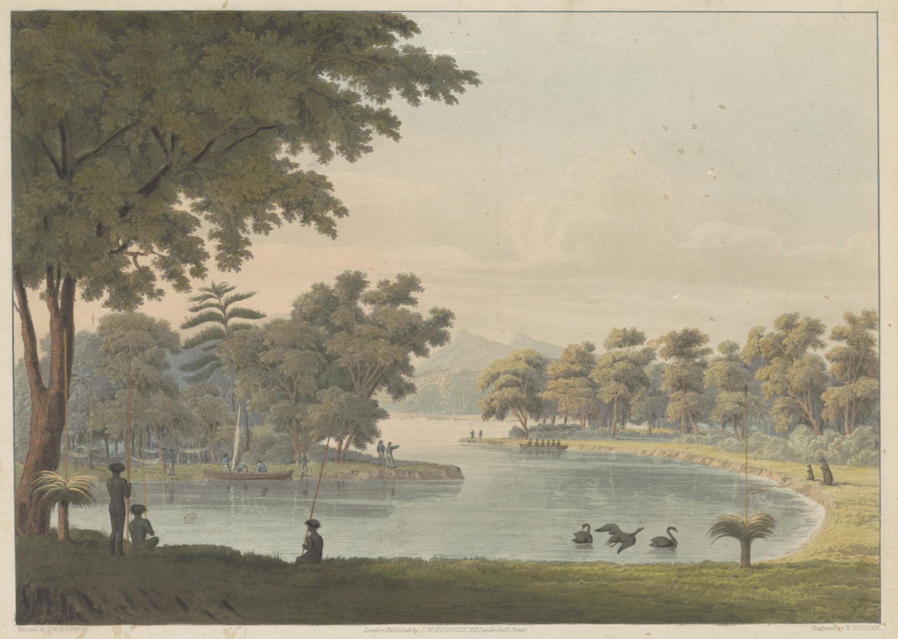

Level 1
Level 2
Level 3
Level 4
Level 5
Finish
- This colony's population has increased!
Ships
Neptune 1838
Rig Type: S
Location Built: Calcutta
Year Built: 1814
Size (Tonnes): 360
Passengers: 200 men
Voyage: 128 days
Deaths: 3
Captain Joseph Nagle
Surgeon Superintendent Patrick Martyn R.N.
The Neptune was built at Cheptow in 1836. This was her only voyage transporting convicts to Australia. She was the next convict ship to leave Ireland for New South Wales after the departure of the Sir Charles Forbes two weeks previously.
An accident which had nearly been attended with fatal consequences occurred off the inner point of Mrs. Macquarie's Chair on Saturday afternoon. Mr. Mackay, of Darlinghurst, and Mr. Abercrombie, of the Glenmore Distillery, had been on board the ship Neptune, lying off Dawes' Battery, and were, at the time of the accident, returning to Mr. Mackay's residence, accompanied by Captain Nagle of the Neptune, in the ship's cutter, with four of the seamen.
When off Mrs. Macquarie's Chair, at about 100 yards distance from the land, and in the act of tacking, a sudden gust of wind caught the sails and upset the cutter, and the whole of the people on board were precipitated into the water. Mr. Mackay, who is considerably advanced in years, and was at the time in a very indifferent state of health, made towards the shore, as did several of the younger and stronger of his companions. Before he could accomplish his object his strength failed him and he sank to the bottom, where he must have perished but for the prompt aid afforded him by Captain Nagle and two of the seamen who swam to his assistance and brought him safely, though senseless to shore. Mr. Abercrombie and two of the seamen saved themselves by clinging to the boat. - Sydney Gazette 16th January 1838
John Renwick 1838
Rig Type: Bark
Location Built: Newcastle
Year Built: 1826
Size (Tonnes): 403
Passengers: 173 women
Voyage: 116 days
Deaths: 1
Captain John Byron
Surgeon Superintendent Andrew Smith R.N.
The John Renwick arrived in Port Jackson on 27 August 1838.
Parbury's Oriental Herald and Colonial Intelligencer in News from Sydney gave the following account of the John Renwickconvicts
The women convicts of the ship John Renwick, were said to be the most troublesome cargo ever imported, being almost in a state of mutiny. Lady Gipps had been on board to attempt to pacify them. Was Miss Julia Newman, who went out in this vessel, the cause of the turbulency?
......however the Sydney Gazette dated 4th September reported that the prisoners of the John Renwick were orderly and clean when visited by Lady Gipps the previous Saturday.
Friendship 1788
Rig Type: Brig
Location Built: Scarborough
Year Built: 1784
Size (Tonnes): 276
Passengers: 76 male, 21 female prisoners, 6 male and 7 female children of convicts
Deaths: 2
Master Francis Walton
Assistant Surgeon Thomas Arndell
The Friendship was scuttled at Borneo on her way to Canton from Botany Bay. The crew joined the Alexander and returned to England in June 1789. .......
July 1788 the transports Alexander Friendship Prince of Wales and Borrowdale sailed from Port Jackson under Lieutenant Shortland by way as it was intended of Endeavour Strait but as it turned out by the Pelew islands China Sea and Sunda straits Bad weather overtaking the vessels after leaving Sydney they became separated the Friendship only remaining in company with the Alexander In which latter was Lieutenant Shortland The Middleton reef and island New Georgia and Shortland of the Solomon islands the Treasury Four and Wallis islands were discovered Pellew islands were communicated with and the north east Coast of Borneo reached October 1 7th Here the crews of the vessels having been terribly reduced by scurvy the Friendship was sunk and the remnant of her ships company transferred to the Alexander Continuing to Batavia the Alexander arrived November 19th in an almost helpless state only one man besides the officers being able to work aloft A new crew was here embarked and at the Cape of Good Hope the Sirius Captain Hunter fallen in with who gave Lieutenant Shortland information that the missing transports Borrowdale and Prince of Wales had returned to England by the southern passage The Alexander arrived at the Isle of Wight May 28th 1789....... Memoirs of Hydrography
Convicts
Hover over the names of each convict to see more information.
Moreton Bay
Current Convict Population: 0

Established in 1824 the penal settlement at Moreton Bay was a place of secondary punishment to house hardened criminals and recidivist prisoners.
The Moreton Bay penal settlement was closed in 1842 when the Moreton Bay area was opened to free settlement, with Brisbane Town as its centre. The colony of Queensland was separated from New South Wales in 1859.
Sydney Cove
Current Convict Population: 0

On 26 January 1788 the first Governor of NSW, Captain Arthur Phillip, and the First Fleet arrived in Port Jackson (Sydney Harbour) to establish a penal colony at Sydney Cove.
Many of the original accounts from the First Fleet mention the numerous ‘natives’ encountered in Botany Bay and Port Jackson from the first days of their arrival. Aboriginal peoples had been living in Australia for at least 40,000 years. The sea and woodland resources of the Sydney region — from the coast to the Blue Mountains in the west — supported a dense population of Aboriginal clans.
In contrast, the British penal colony struggled in its first decades with lack of food — exacerbated by the failure of European farming practices on unfertile Australian soil — and a shortage of supplies.
Van Diemen's Land
Current Convict Population: 0

To early British settlers, Van Diemen's Land (as they called Tasmania) was the end of the world – an ideal location for some of their government's largest and most notorious penal colonies.
The first Tasmanian jail was built at Risdon Cove in 1803, but in 1804 the prisoners were moved to Sullivans Cove – soon to be known as Hobart.
After a decade or so, the Macquarie Harbour penal colony was established as a work house on Tasmania's west coast where convicts logged the Huon pine forests for ship building and furniture making. Renowned even among Britons at the time as a particularly harsh prison, it's remembered as the site of doomed escapes by convicts who drowned, starved or resorted to cannibalism in the surrounding bushland.
Swan River Colony
Current Convict Population: 0

The Swan River Colony marked a new chapter in Britain’s colonisation of Australia. The two main colonies of New South Wales and Van Dieman’s Land had at first been populated primarily by convicts. The Swan River Colony, founded in 1829, was to be something different, a colony for free settlers.
During the first year of settlement the Swan River Colony struggled on a number of fronts. Initially too many people arrived too quickly, and then there were too few. Soon the population began to decline as disheartened settlers left for the eastern colonies.
In 1847 the York Agricultural Society, a group of wealthy pastoralists, petitioned the colony’s Legislative Council to consider the introduction of convict labour. They argued that convict labour would stimulate the economy and open up the state to farming and development.
Thanks for playing Convict Journey! We hope you had fun.
Want to try for a different ending?